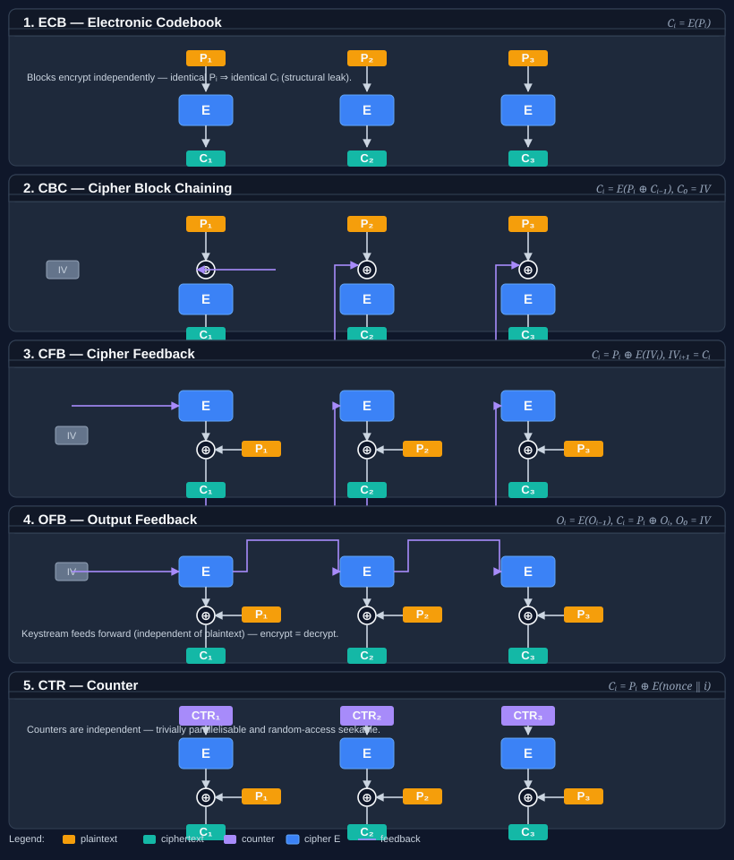

Class EcbModeTransform
Applies the Electronic Codebook (ECB) mode transformation to an underlying IBlockCipher, encrypting or decrypting each block independently with no chaining.
Inherited Members
Namespace: Bodu.Security.Cryptography
Assembly: Bodu.Security.Cryptography.dll
Syntax
public sealed class EcbModeTransform : IBlockCipherModeTransform, IDisposableRemarks

Encryption computes Cᵢ = E(Pᵢ) and decryption Pᵢ = D(Cᵢ); no initialization vector is used. See
panel 1 of the diagram above: each column is entirely self-contained, so the three cells carry no arrows between
them.
That independence is exactly what makes ECB insecure for virtually all real-world messages: identical plaintext blocks always yield identical ciphertext blocks, leaking structural information. Prefer CBC, CTR, or an authenticated mode unless ECB is required as a primitive inside a larger construction.
When to use ECB. Only as a building block inside a larger, well-understood construction — for example, encrypting a single fixed-length tweak inside an XTS or wide-block scheme. For protecting arbitrary plaintext, use CbcModeTransform as a baseline, CtrModeTransform when random access or stream-cipher behavior is wanted, or one of the AEAD modes (GcmModeTransform, EaxModeTransform, …) when authentication matters.
Because ECB has no chaining state, the transform is stateless — repeated Transform(ReadOnlySpan<byte>, Span<byte>, bool) calls produce the same result for the same input — and is trivially parallelisable.
Examples
using System.Security.Cryptography;
using Bodu.Security.Cryptography;
// Most callers should reach for SymmetricAlgorithm.Mode = ECB instead of constructing this directly.
// Direct use is appropriate only inside larger primitives (e.g. wide-block constructions, KDFs).
using IBlockCipher cipher = new AesBlockCipher(key);
IBlockCipherModeTransform ecb = new EcbModeTransform(cipher);
byte[] ciphertext = new byte[plaintext.Length];
int written = ecb.Transform(plaintext, ciphertext, encrypt: true);Constructors
| Name | Description |
|---|---|
| EcbModeTransform(IBlockCipher) | Initializes a new instance of the EcbModeTransform class that wraps the specified block cipher. |
Methods
| Name | Description |
|---|---|
| Dispose() | Releases the resources used by this instance. ECB holds no per-message chaining state, so this is a no-op beyond satisfying the IBlockCipherModeTransform contract. The underlying IBlockCipher is not disposed by this type — ownership remains with the caller. |
| Transform(ReadOnlySpan<byte>, Span<byte>, bool) | Transforms |